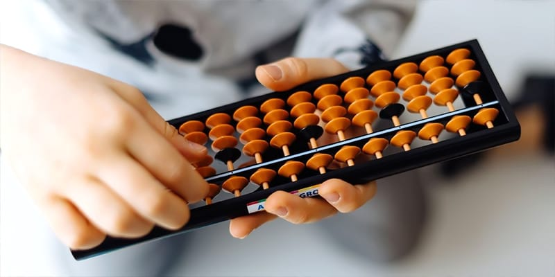
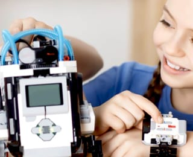
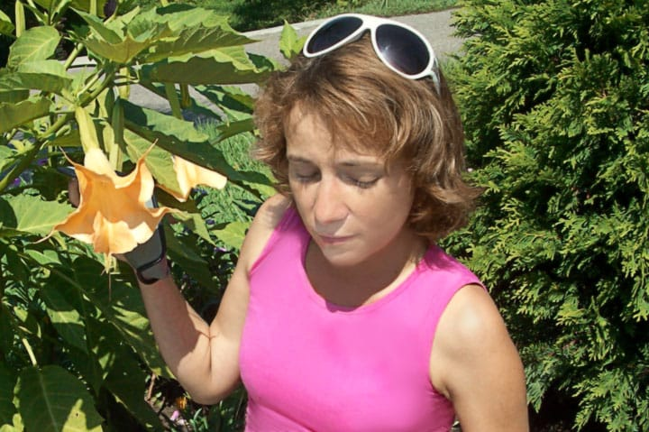
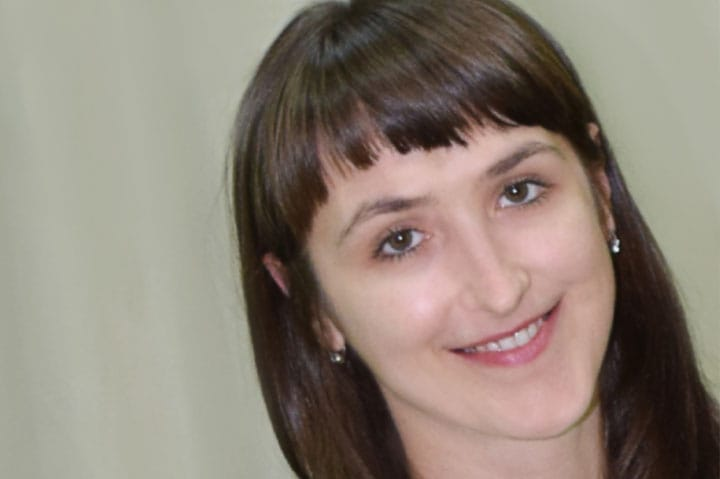
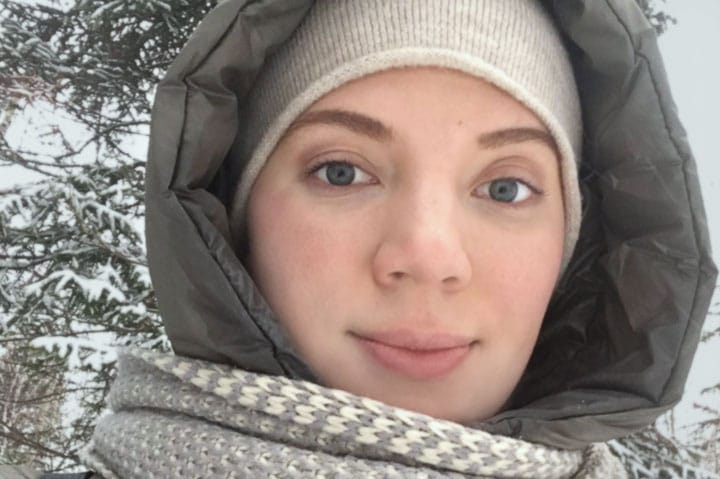

Рассмотрим 5 причин, по которым нужно выбрать нас!
Преимущества детского центра развития «СТАРТ » в Красноярске.
Ментальная арифметика
— № 1 —
Международная школа по ментальной арифметике «Абакус-центр»
Детский центр «СТАРТ» продолжает набор детей с 3,5 до 15 лет
У нас работают специалисты, прошедшие стажировки в Москве у китайских коллег. Ментальная арифметика в центре работает по франшизе Международной школы «Абакус-центр».
Первое занятие бесплатно!

Дошколенок
«Осмысленное чтение» научит не только быстро читать, но и грамотно писать!
ABACUS Professional
Быстрый счет, усидчивость. Методика рекомендована для детей с 4 лет!
Школа юного инженера
Развитие мелкой моторики и логического мышления!
Робототехника
— № 2 —
Возможность создать свой собственный проект и проявить инженерные способности
Детский центр «СТАРТ» продолжает набор детей с 3,5 до 15 лет
«Робототехника и школа юного инженера» заложит в вашем ребенке основы понимания от природных явлений до программирования роботов.
Первое занятие бесплатно!

Подготовка к школе
— № 3 —
Подготовим вашего ребенка в школу по ФГОСам. С 5 лет!
Продленка, прогулки
— № 4 —
С 8-12, c 12-19 часов. Обед, домашние задания, студии по интересам.
Логопед-дефектолог
— № 5 —
Исправляет все виды речевых нарушений у детей!
Последние новости и акции детского центра развития «СТАРТ» в Красноярске, в Советском районе.
Преимущества детского центра развития «СТАРТ» в Красноярске, в Советском районе.
Наши преимущества
Интересно
Мы работаем по франшизе международной школы ментальной арифметики «Абакус-центр». Учиться по нашим методикам интересно и эффективно.
Круто
Наши дети с раннего возраста не только придумывают, развивают логику и мышление, но и ездят на международные олимпиады и занимают призовые места.
«Дорого»
У вас есть возможность познакомиться с нашим центром. Бесплатный первый урок! Только проверенные вами услуги. Вас приятно удивят наши цены.
Отзывы родителей о детском центре развития «СТАРТ» в Красноярске, в Северном.
Отзывы о нас

Анастасия Г
Посетила центр с племянницей, пробное занятие бесплатно. Ребенок остался доволен. Важно — дружелюбные сотрудники, приходим к друзьям в гости.
5.0

Анна П
Ходим в этот центр уже 3-й год. Начали ходить на «дошколенок» и робототехнику. Нравится подход к детям, программы, доступные цены и что рядом с домом.
4.9

Анастасия Щ
Ребёнок доволен, с радостью идёт всегда на робототехнику и менталку. За это благодарность учителям! Хочу отметить комфортное и чистое помещение центра!